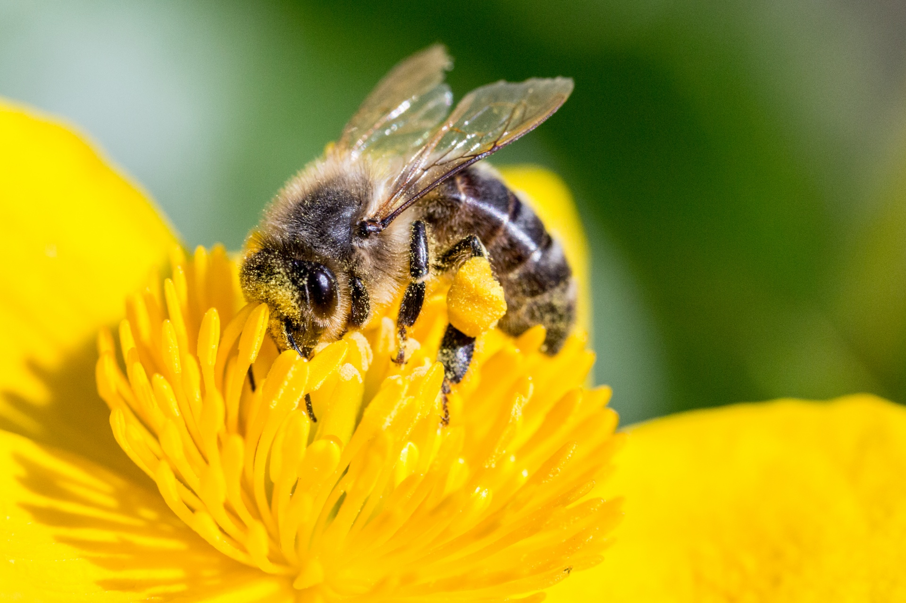

About
Approximately a third of all crops rely on pollinator species such as bees, butterflies, moths, birds, bats, wasps, beetles, and flies in order to reproduce. However, many of these species are in decline which threatens our food supply. One of the main solutions to helping pollinators is to plant flowers and trees that our native to the area to help restore their habitat. This poses two questions: "What plants do I need?" and "How can I obtain them?". The data needed to answer these questions was scattered in multiple places and hard to find. Pollinator Plant Database has compiled these resources so now anyone from an individual gardener to a sprawling farm can help save our pollinators.
This app was made possible thanks to the Google Cloud Platform.
Cloud Dataprep by Trifacta was used to clean and sort through the raw data.
Cloud SQL handles the database.

BigQuery adds and reviews the data in the database.
The app itself was deployed using App Engine.
.svg){kind=link}
{kind=link}